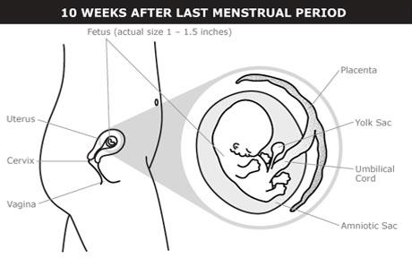
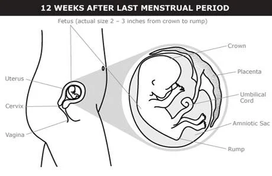

©copy writed by Group II
The embryo becomes a fetus when you’re 3 months pregnant. The umbilical cord connects the fetus to your placenta and uterine wall. External sex organs also start to develop.
The embryo develops into a fetus after 10 weeks. It’s 1–1.5 inches (21–40 mm) long. The tail disappears. Fingers and toes grow longer. The umbilical cord connects the abdomen of the fetus to the placenta. The placenta is attached to the wall of the uterus and it absorbs nutrients from the bloodstream. The cord carries nutrients and oxygen to the fetus and takes waste away from the fetus.

The fetus is now measured from the top of its head to its buttocks. This is called crown-rump length (CRL).
The fetus has a CRL of 2–3 inches (6–7.5 cm).
Fingers and toes are no longer webbed.
Bones begin hardening.
Skin and fingernails begin to grow.
Changes triggered by hormones begin to make external sex organs appear — female or male. The fetus begins making spontaneous movements.
Kidneys start making urine.
Early sweat glands appear.
Eyelids are fused together.

Many of the pregnancy symptoms from the first 2 months continue — and sometimes worsen — during the third month. This is especially true of nausea. Your breasts continue growing and changing. The area around your nipple — the areola — may grow larger and darker. If you’re prone to acne you may have outbreaks.
You probably won’t gain much weight during the first 3 months of pregnancy — usually about 2 pounds. If you’re overweight or underweight you may experience a different rate of weight gain. Talk with your nurse or doctor about maintaining a healthy weight throughout your pregnancy.
Most early pregnancy loss — miscarriage — happens in the first trimester. About 15 percent of pregnancies end in miscarriage during the first trimester.
©copy writed by Group II